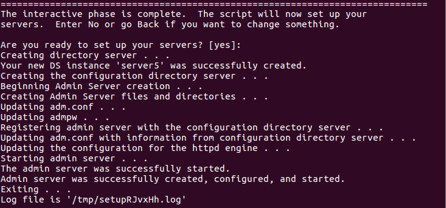

Сегодня мы посмотрим, как запустить свой LDAP-сервер на CentOS 7 с помощью 389 Directory Server.
Основные этапы:Вначале нужно поставить Vagrant. Для его работы необходим VirtualBox. Найти его можно здесь.
Дальше ставим сам Vagrant следующей командой:
# apt-get install vagrant
Теперь нам нужно скачать 'коробку', то есть среду. Мы будем использовать CentOS 7:
# vagrant box add centos/7
Создаём папку, внутри неё запускаем терминал и выполняем:
# vagrant init
Команда сгенерирует для нас файл 'Vagrant', в котором нужно поменять значение поля 'config.vm.box' на "centos/7" и добавить строку config.vm.network "private_network", ip: "192.168.50.4".
Дальше нам нужно запустить нашу виртуальную машину. В директории с файлом 'Vagrant':
# vagrant up
На это может уйти несколько минут. Далее, входим в консоль машины:
# vagrant ssh
Открываем файл '/etc/hosts':
# vi /etc/hosts
и дописываем локальный адрес:
192.168.50.4 server.ldap.local testserver
Аналогично дописываем в конце файлов:
'/etc/sysctl.conf':
net.ipv4.tcp_keepalive_time = 300
net.ipv4.ip_local_port_range = 1024 65000
fs.file-max = 64000
'/etc/security/limits.conf':
* soft nofile 8192
* hard nofile 8192
'/etc/profile':
ulimit -n 8192
и '/etc/pam.d/login':
session required /lib/security/pam_limits.so
Далее нам нужно устанавить репозиторий EPEL:
# yum install epel-release
При настройке сервера мы можем воспользоваться нашим текущим пользователем, но лучше создать нового:
# useradd ldap
# passwd ldap
Теперь устанавливаем сам сервер и запускаем его настройку:
# yum install 389-ds-base 389-admin
# setup-ds-admin
Перед нами появится программа настройки. Нам нужно задать значения следующим полям:
Computer name: 'server.ldap.local'
System User [dirsrv]: 'ldap'
System Group [dirsrv]: 'ldap'
Для всех остальных, кроме полей с вводом пароля, просто нажимаем Enter, оставляя стандартные значения.
По окончанию мы должны увидеть следующее:
Готово! Теперь мы можем проверить работоспособность LDAP-сервера выполнив команду:
# ldapsearch -x -b "dc=ldap,dc=local"
Для более удобного управления сервером можем воспользоваться утилитой 389-console:
# yum install 389-console
# 389-console
Если при работе с ней будут возникать ошибки, то необходимо поместить содержимое этого архива в папку '/home/null'.